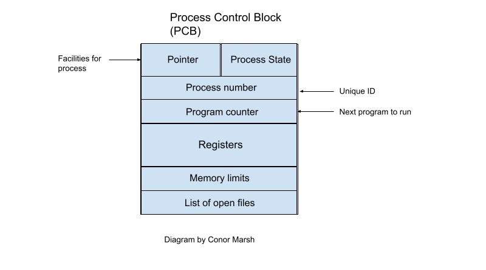

A process is simply a program in execution. It can be assigned to, and executed on, a processor. A majority of the time one program has one process associated with it. In rare cases there are exceptions such as within Google Chrome. Also, if multiple users are executing the same sequential program, multiple processes will be involved. Each process has different components which allow it to perform its specific tasks (E.g. Stack is used for local variable allocation and heap is used for dynamic variable allocation). Each process needs each of these components to run as a program. At any one time hundreds of processes can be running on a computer and it may be useful to view detailed information about each process and how much memory space it is taking up. System slow-down time can be reduced by subsequently destroying unneeded processes. In Windows this can be accomplished easily by using the Task Manager. In Linux or Unix run the “top” or “ps aux” command on the command prompt to display running processes and further relevant information on these processes.
When a program is stored on disk it is known as a passive entity. It becomes an active entity when the executable file is loaded to memory, thus beginning its execution as a process.
An operating system should intelligently handle processes in such a way that the system runs at maximal efficiency in any given situation. The system should understand the state of the process being handled. This state can change through multiple phases, be it that the process has just been created, is waiting to run, waiting for access to a device, or has been interrupted by other processes. At the right times, the system should create new processes, switch between them, pause them or suspend them and ideally this will allow the operating and its programs to run as seamlessly as possible.
The operating system will utilise a Protocol Control Block to handle processes in an effective manner. Useful information is saved here including the current state of the process, what instruction it is due to perform net and which devices have been allocated to the process. Management is possible when the current process state is saved, allowing for a safe switch to a new process before the older process is later reestablished based on the previously saved information.
When a process is paused and saved, enabling the switch to a separate process, we are utilising context switching. This is the basis for allowing the operating system to engage in multi tasking. The separate processes do not conflict and we can depart from one to another whenever needed.